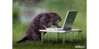
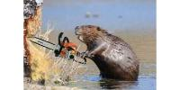
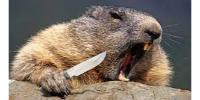
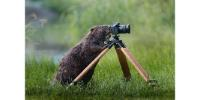

| Название | Бобр за компом> | Бобр с бензопилой | Бобр с ножом | Бобр с камерой |
|---|---|---|---|---|
| Картинка |  |  |  |  |
Бобры́ (лат. Castor от др.-греч. κάστωρ «бобр» ← κάστον «древесина») — род млекопитающих из отряда грызунов[2]. Единственный современный представитель семейства бобровых (Castoridae Hemprich, 1820). Делится на два вида — обыкновенный бобр (Castor fiber), обитающий в зоне от Атлантического побережья до Прибайкалья и Монголии, и канадский бобр (Castor canadensis) — в Северной Америке. Некоторые зоологи рассматривают канадского бобра как подвид обыкновенного бобра, однако этой точке зрения противоречит разное количество хромосом (48 у обыкновенного и 40 у канадского). Современная систематика различает восемь подвидов обыкновенного бобра.
Спасибо за информациюА вы знали что бобры самые милые существа на свете?